Overview
To complete this tutorial we will now be moving into CRYENGINE. We'll be using the Character Tool and the character attachment system within.
Tutorial Files
If you want some files for reference, please download and unzip the tutorial files as described on this page.
Setting Up the Exported Assets in CRYENGINE's Character Tool
From the last section you should have these files exported:
- ponytail_SKEL.chr (primary base skeleton you want to attach the pony tail SKIN attachment)ponytail_msh.skin (the SKIN attachment to extend your base character/skeleton)
- ponytailMAT.mtl (a standard blank material)
- default.i_caf (an uncompressed animation to drive the physics of the pony tail)
In this section we will go through the process how to get the *.chr file into the "SkeletonList.xml", create a new character, extend the the new character with a pony tail "Skin Attachment", before we go into the next section just demonstrating the Character Tool's attachment system with some use cases. By the end you will have:
- edited the SkeletonList.xml
- added a *.cdf file
- added a *.chrparams file
- added an *.animsettings file
- (generated the compressed *.caf file)
Add a New Character in CRYENGINE's Character Tool
Fire up Sandbox Editor and open the Character Tool. Add the exported *.chr file to the SkeletonList.xml.
From engine version 5.6 onwards, the skeleton list is not used anymore, so you can ignore any references to it on this page.
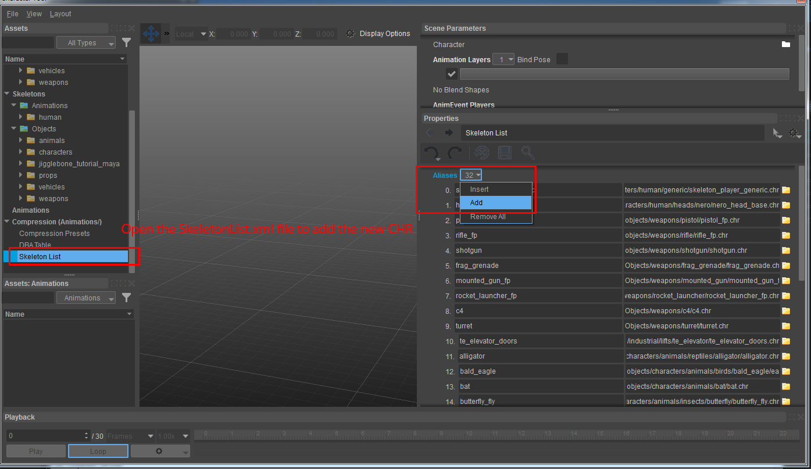
Pic1: Add the exported *.CHR skeleton file to the "SkeletonList.xml"- Your new entry should look like this, depending if you want to modify the skeleton's name and how many skeleton entries have been already added:
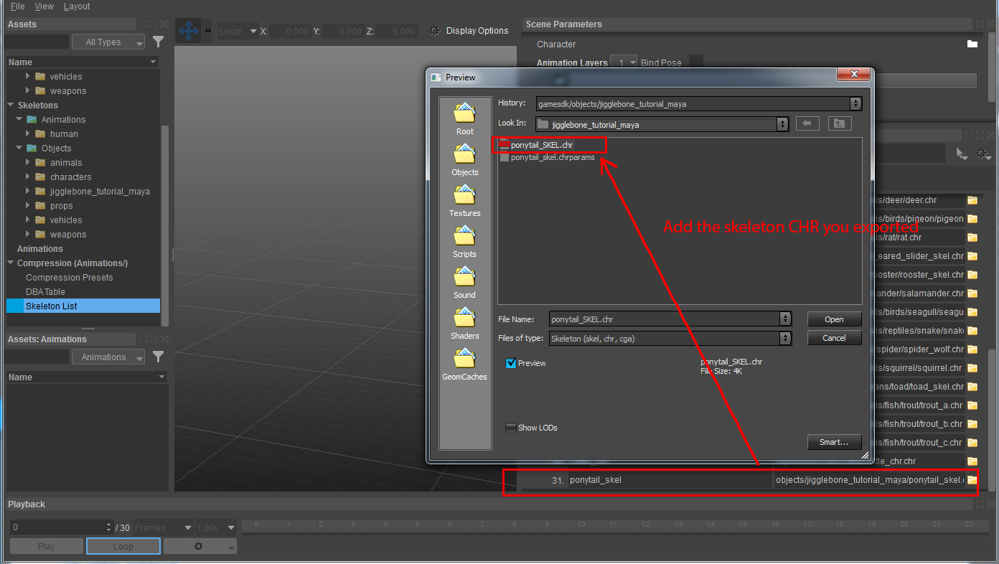
Pic2: New entry should look like this - Don't forget to save the "SkeletonList.xml", otherwise you cannot find the skeleton after you made the CDF and try to point the CDF to the skeleton/CHR file!
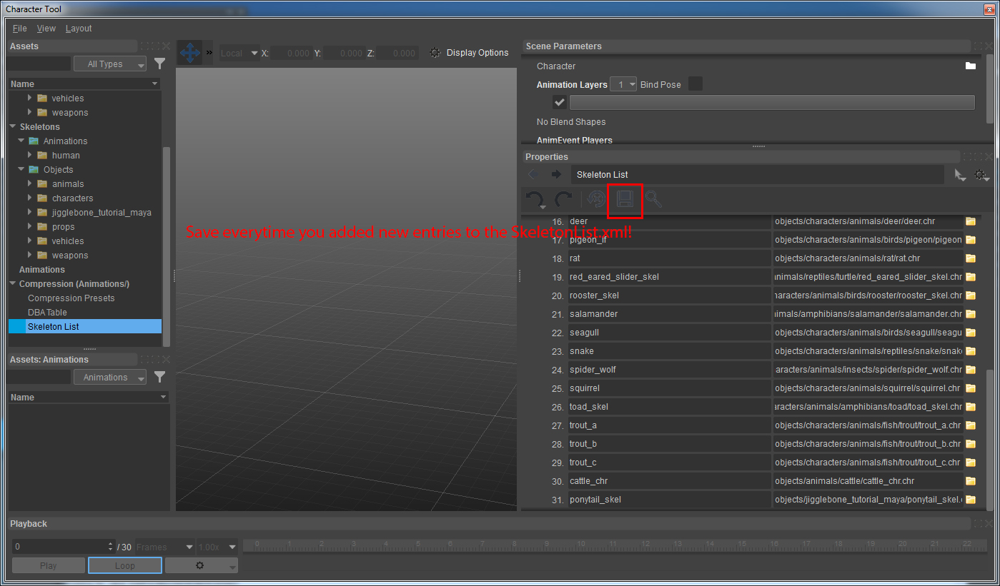
Pic3: Save your "SkeletonList.xml" - Now it's time to add a new CRYENGINE character by creating a new *.CDF file. On the Character Tool menu bar, go to File -> New Character... and a new dialog window opens. Go to your project folder (ours is located under YOUR_PROJECT_FOLDER\Assets\Objects\jigglebone_tutorial_maya) and give the CDF a proper name. In our case, we chose "attachment_ponytail.cdf".
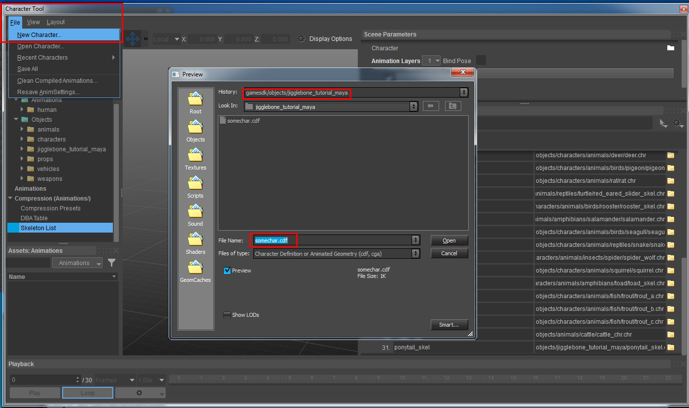
Pic4: Add a new CDF (Charcater Definition File) Look at the pane on the left of Character Tool. You will find your new character CDF file under:
Characters -> Objects -> jigglebone_tutorial_maya\attachment_ponytail.cdf.
Double-click it to open the character. Notice the asterisk in front of name?Whenever you see an asterisk "*" in front of names in CRYENGINE, the recent changes you made have not been saved yet. So press the Save icon when you are happy with the changes.
On the right pane the properties of the CDF is displayed, there browse for the *.chr you exported and added to the "SkeletonList.xml":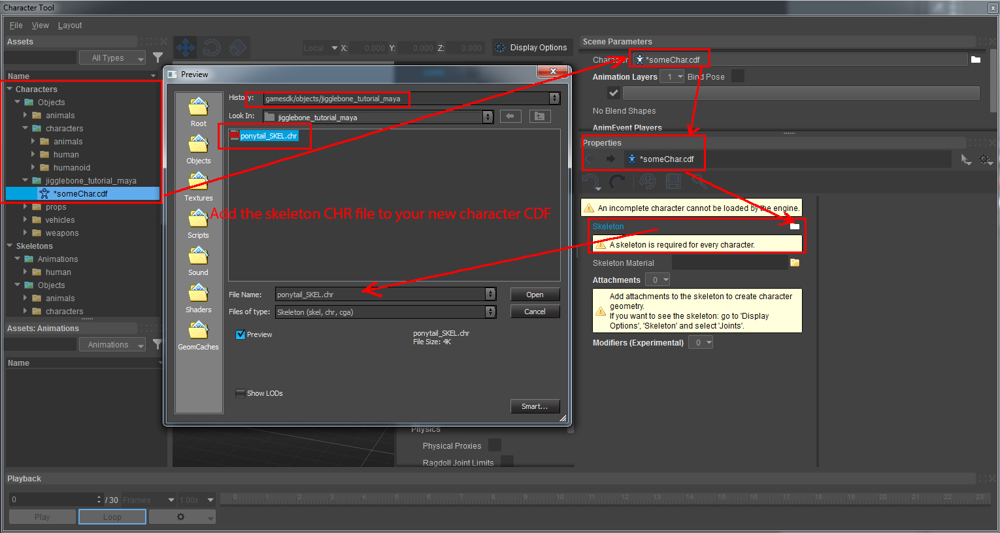
Pic5: Add the skeleton again to the CDF- You can turn on the display of Joints and Joint Names to see you have your skeleton without any geometry skinned to it.
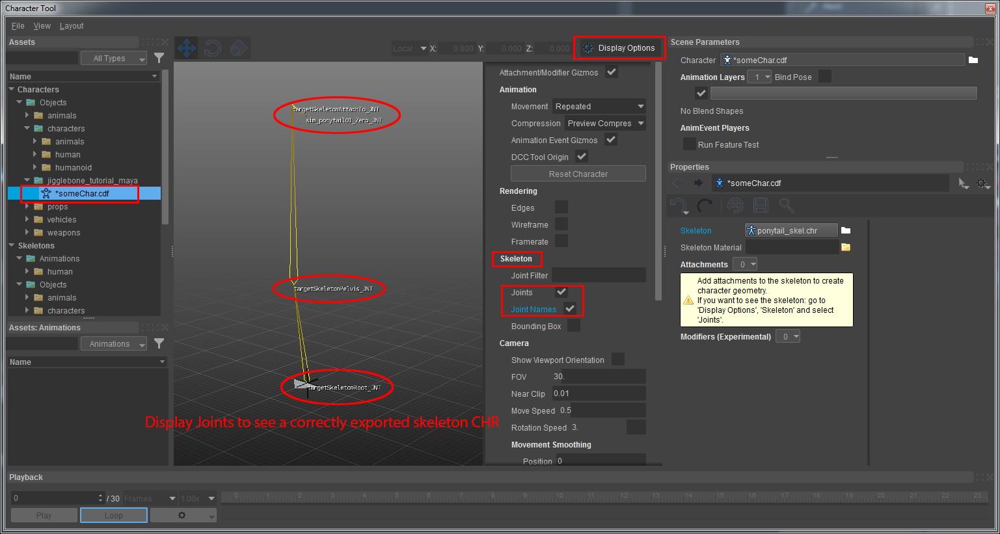
Pic6: Display of joints to verify you correctly exported your skeleton - Since we only added an abstract skeleton as a representation of a human character (only a pelvis, a head along with the root joint was made) we don't even need a human-like mesh bound to this skeleton. It is just to show you how minimalistic we can go with a base skeleton and focus on the physics part that comes in the next section.
Add the Pony Tail as "Skin Attachment" to Extend the Base Skeleton
- We must add the pony tail skin attachment. With the character CDF still active, we can add an attachment and change from the default Joint Attachment to a Skin Attachment and choose the "ponytail_MSH.skin" file.
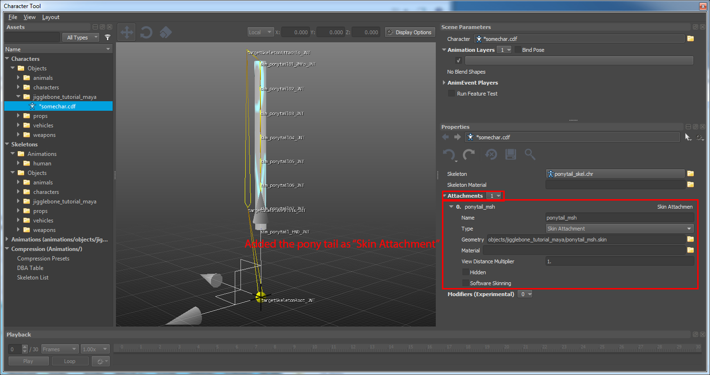
Pic7: Add the pony tail skinned object as "Skin Attachment"
Get the Exported Animations Showing up by Adding a *.CHRPARAMS file to Your Skeleton CHR
- Click on the skeleton CHR file to get access to its chrparams. CRYENGINE will automatically create the *.chrparams file for you if it cannot find one. The next step is to tell the Character Tool where you exported the animations.
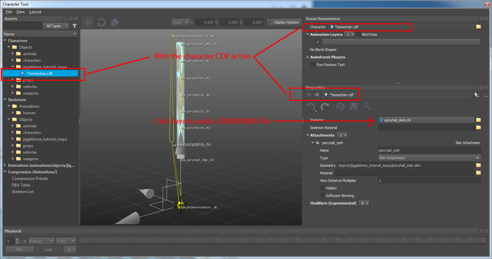
Pic8: Add *.CHRPARAMS file by clicking on the skeleton CHR entry in your CDF - Browse to the folder where the Character Tool will find our animations.
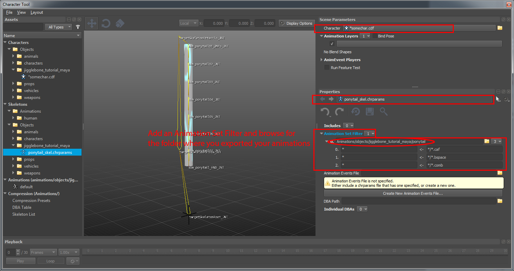
Pic9: Set the animation folder - After you finished and saved the *.chrparams file, you should see the animation we made and called "default" under the Animations drop-down list. Look at the left pane of the Character Tool window and find this animation:
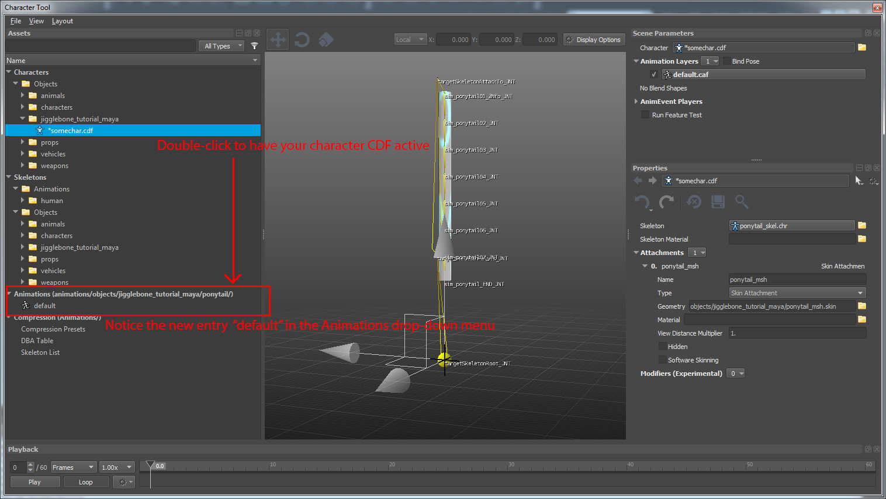
Pic10: Animation set you exported - Check the correctness of the exported animation by double-clicking on the "default" file or just hit the Play button in the bottom Playback section. The Character Tool should also create an *.animsettings file for you and compress the exported *.i_caf files to *.caf.
Add "Joint Attachments" to let the physics of the Attachment System to drive the pony tail skin joints
For each joint of the pony tail taking part in the simulation, we will add a "Joint Attachment" in your character's CDF. Look at the pony tail joint names. We prefixed them with "sim". So, for these specified joints please:
- Activate the "Redirect to Joint" checkbox, repeat this for each subsequent simulation joint
- A unique name must be given to each Joint Attachment, repeat this for each subsequent simulation joint
- Browse and point to the joint/bone skinned to the pony tail geometry, repeat this for each subsequent child joint going from root to its leaf joint
- Choose the Simulation type: "Pendulum Cone" for each Joint Attachment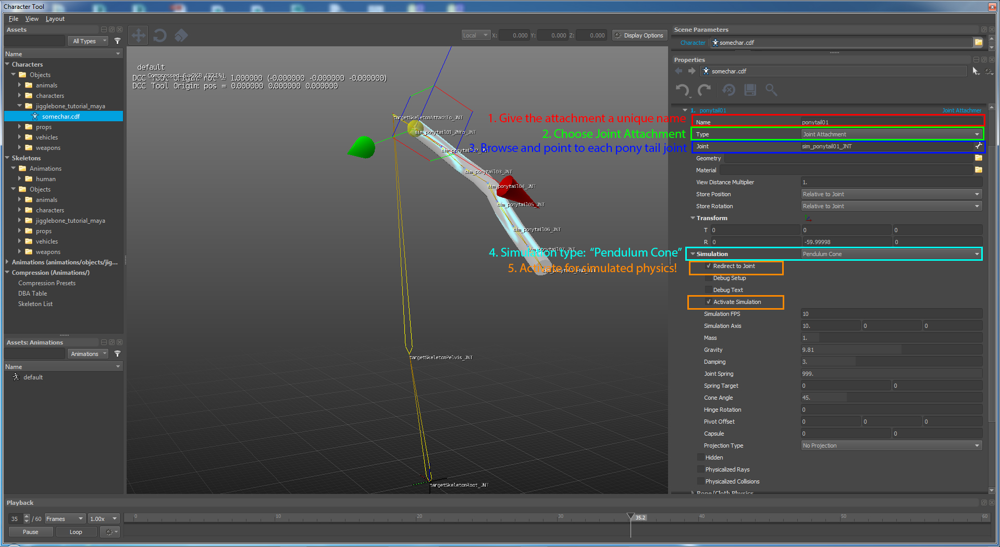
Pic11: How to activate the physics of the Attachment SystemMake sure you have set these five areas correctly.
- After you added a "Joint Attachment" for all pony tail simulation joints and set the five parameters shown in step 1, your basic setup is done.
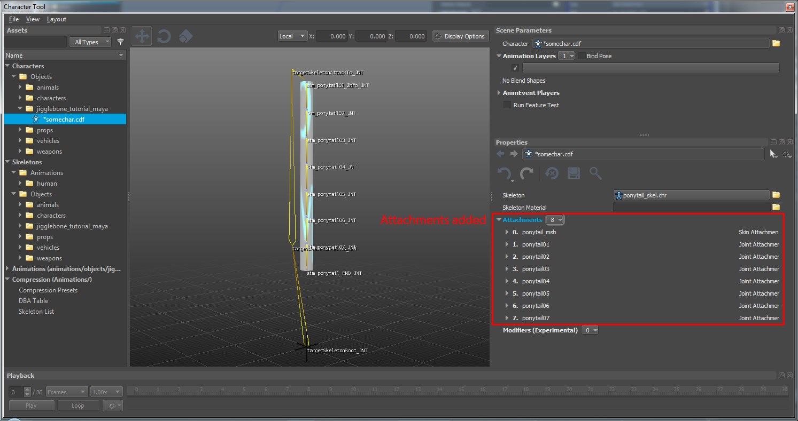
Pic12: Resulting "Joint Attachments" added
Next we'll be playing with the settings of the "Pendulum Cone" physics. In the next we'll explain section which parameters make the big changes.
Joint Attachment Physics in Character Tool
Before we dig deeper into the simulation parameters, let's change the layout for the properties on the right side of the Character Tool window. This is an important step to be able to tweak the values across multiple "Joint Attachments" concurrently.
Switch Layout for manipulating physics parameters across multiple Joint Attachments
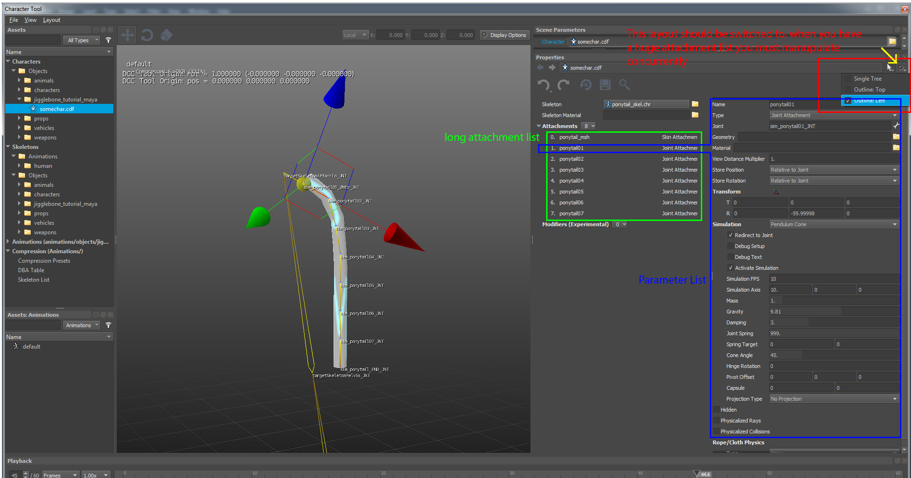
Pic13: Split the right pane in the Properties section into two right and left halves
Try selecting multiple Joint Attachments on the left and make changes for the same parameter in the right. Cool, eh?
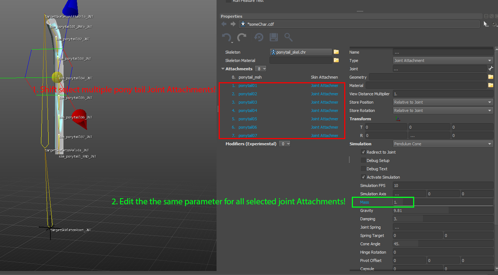
Pic14: Always use this layout for tweaking parameter across several attachments
In addition, you should turn on/off the debug view when you make changes to the simulation parameters:
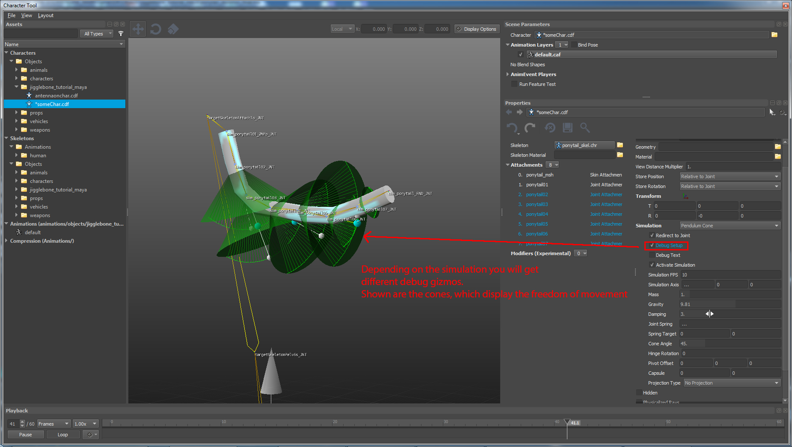
Pic15: Debug View
I. Physics Use Case 1
(File: attachment_ponytail.cdf)
Pony Tail Setup Using Pendulum Cones
First, pendulum physics will produce only rotations to your simulated nodes. If you need translations, use the spring attachments or at least mix the spring and pendulum simulated attachments. You will see bending of the joint chain.
The strategy to change the physics parameters is to only change one of a kind at the same time, ideally starting from the top. For the Pendulum physics system we highlighted the parameter names by using a Blue color.
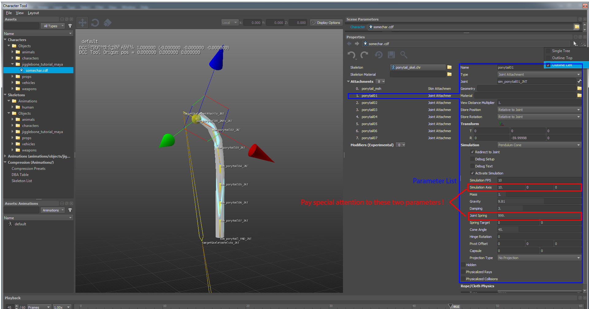
Pic16: Take special care of these two parameters for each Joint Attachment in the attachment list
Physics Parameters you normally do not have to change
- Gravity: Except you want to simulate outer space or being on other planets.
Pendulum Physics Primary Parameters:
- Simulation Axis is the pendulum vector and length. Therefore, a vector v1 = [500, 0, 0] is not equal to v2 = [1, 0, 0] the physics calculations.
The reason we took special care of the orientation of the "Local Rotation Axis" of every joint in Maya/3ds Max now pays off. We only need to type in x-values for the simulation axis as the joints aim axis is its local X axis.
For a more "stable" simulation, one or two of the top joints should receive bigger pendulum lengths than the ones in the end of the chain. Open the provided character CDF and examine the values. - Damping has a domain ranging from [0..10]. For a nicely swinging pony tail, keep it at some lower values, like 2 or 3.
- Joint Spring domain ranges from 0 to 1000, so don't be shy to increase to something, like 50 or 200. This value drives the force to pull the simulation back to its original joint. This value will make it behave more like stiff "Spring Ellipsoid" simulation.
- Cone Angle is the degree of freedom of movement. the standard 45 deg works fine on most cases though and only needs re-adjustment once or twice. Remember this parameter also depends on the number of joints and the degree of freedom for the whole joint chain. In some cases you'll need to increase it, e.g. for an iron chain with many links.
Pendulum Physics Secondary Parameters:
- Simulation FPS may be set to the FPS you exported (30FPS?), just stay reasonable. The standard 10 FPS works fine for slower primary animations. Increase to 120FPS if you have "unstable" simulation results. This is especially true for springs in the next section.
- Spring Target lets you deform the initial shape of your joint chain. The Joint Spring will pull to this target than the joint chain initial location. If you haven't modeled the pony tail joint chain into a nice looking "S" shape, you can now use the spring target to reshape it.
- Pivot Offset lets you move the simulation pivot to a different place. If you did the joint orientation and joint placement correctly in your 3D application, you don't need to re-adjust.
- You can add offset Translate (T) or Rotate (R) each joint in your pony tail skeleton by these two vectors:
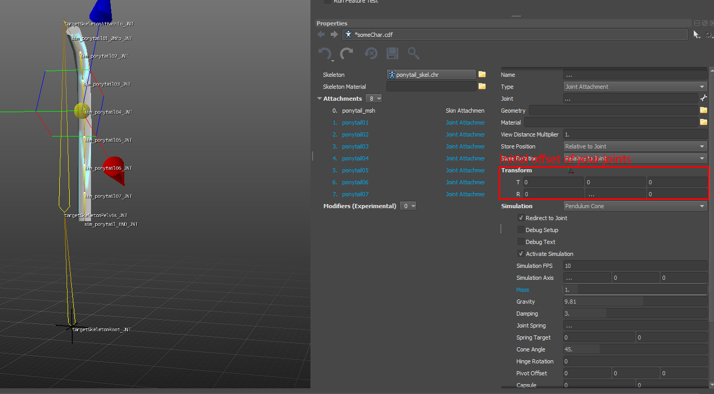
Pic17: For the first joint we added a rotation offset to make the pony tail look like sticking out of the back head and then hanging down
Parameters that have no impact on the simulation of "Pendulum Cone"
- Mass
- Hinge Rotation is only applicable to the Pendulum Hinge simulation and will be overwritten by Cone Angle
All other mentioned parameters are applicable to the other pendulum types: Pendulum Hinge, Pendulum Half Cone, etc.
Try using same parameter values for the simulated joints, especially true with equidistant joints.
If you leave the "Pendulum Cone" simulation joints to the default values, you may want to play with the Damping, Joint Spring and the Cone Angle to get nice results:
use low Damping values around 0.3 in 0.05 steps.
start with Joint Spring values around 20 and advance in steps of plus/minus 5.
increase the Cone Angle, if the simulation becomes jerky. Re-evaluate Damping and Joint Spring.
II. Physics Use Case 2
(File: attachment_antenna.cdf)
Antenna Setup Using Spring Ellipsoids
First, spring physics will produce only translations. If you need rotations, get the pendulum or at least mix the spring and pendulum simulated attachments.
You will see stretching of the joint chain, along with them translated each on a disk or ellipsoid shape, when using this simulation type.
Spring Ellipsoid Primary Parameters:
- Mass : While not affecting the pendulum physics it does have huge impact for springs. But apply small values between 0 and 1.
- Gravity : You may want to change the Gravity for Spring Ellipsoid simulations. Try lowering Gravity and Mass for all simulated joints when your springs tend to collapse or go wild.
- Damping takes the energy out of the spring movement
- Stiffness is how stiff you want the springs to be. The higher the stiffness the more force must be applied to make the joint chain to deform.
- Disk Radius and Sphere Scale are used for defining the freedom of movement for the springs.
Disk radius is most important to limit the spring elongations. If the simulation becomes "unstable" and the joint vibrating like crazy, try increasing the Disk Radius.
Sphere Scale value not equal 1 will deform the range of movement to an ellipsoid shape. If one value is 0, this will limit the spring movement to a disc. - Simulation FPS should set to higher values for Spring Ellipsoid than the default 10 fps; we recommend 60+ FPS.
Spring Ellipsoid Secondary Parameters:
- Disk Rotation is linked to the Disk Radius and Sphere Scale. When the borders of the spring movement is shaped like a disc (Sphere Scale = [0, 0]), you can turn the disc using this parameter.
- Spring Target defines the target position, into which the direction an additional force is applied. This will result in an offset of the initial spring rest position.
- Pivot Offset will move the initial position of the simulation. If you aligned the joints in your source 3D application scene correctly, you normally do not change this value.
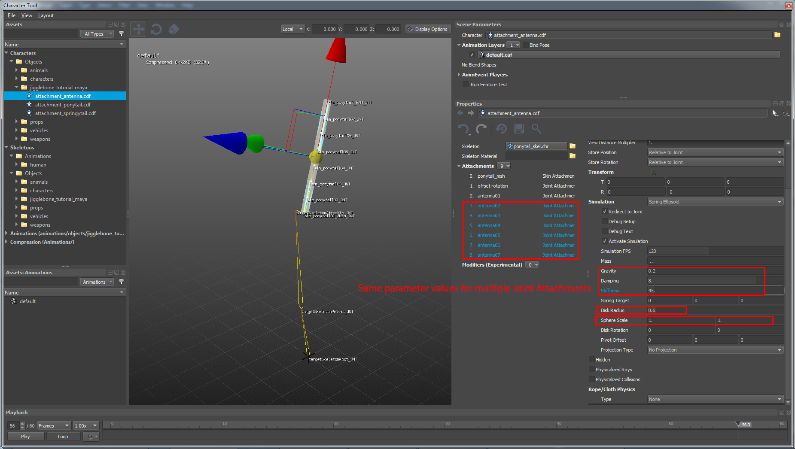
Pic18: Example of a "Spring Ellipsoid" simulation setup (File: attachment_antenna.cdf)
Springs are much harder to control than the pendula. Your main goal should be:
Start using same parameter values for the simulated joints, but vary the pendulum length (Simulation Axis) to "stabilize" joints.
With Debug View turned on:
- increase the Disk Radius, so the springs have full freedom of movement
- lower Gravity to small values, e.g. 0.2
- increase Damping to high values up to 10
- lower Mass below 1.0
Now play with Stiffness values, in steps of 5, start with 30
III. Physics Use Case 3:
(File: attachment_springytail.cdf)
Mixing Pendulums & Spring Ellipsoids
Open the "attachment_springytail.cdf" in the Character Tool.
Perhaps, you may have noticed in the previous Use Case 2, that to offset rotate up the antenna, we added a Pendulum Cone with initial rotation. This way, we could rotate the whole joint chain. Hence, you may have SEVERAL simulations running on ONE joint:
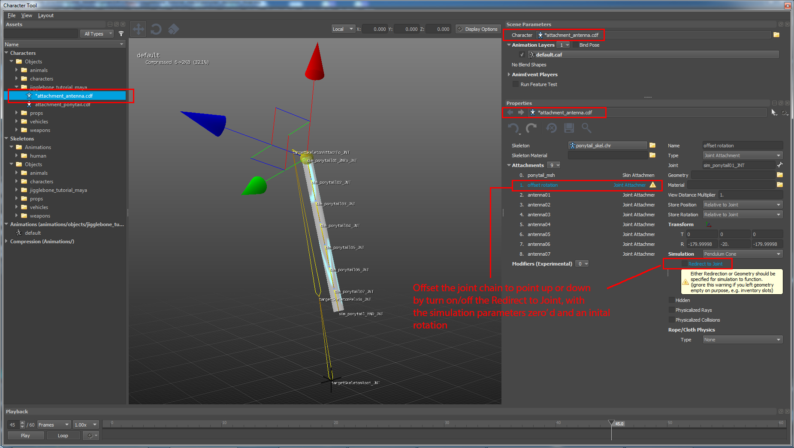
Pic19: Achieve a similar pendula simulation with springs
We used different setup to make a pony tail, but the difference between the CDF using springs and pendula is the following (beside the stretching (translation) of the springs and bending (rotation) of the pendula simulation):
With the springs, the whole joint chain is tilted as the "head joint" (the node that is animated) ends up tilted, while with the pendula, the whole joint chain rotates to point down, as gravity pulls it downwards.
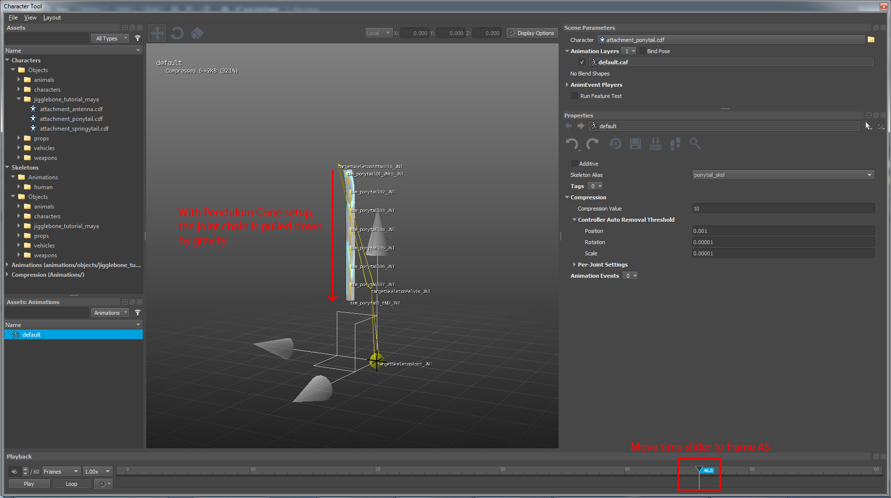 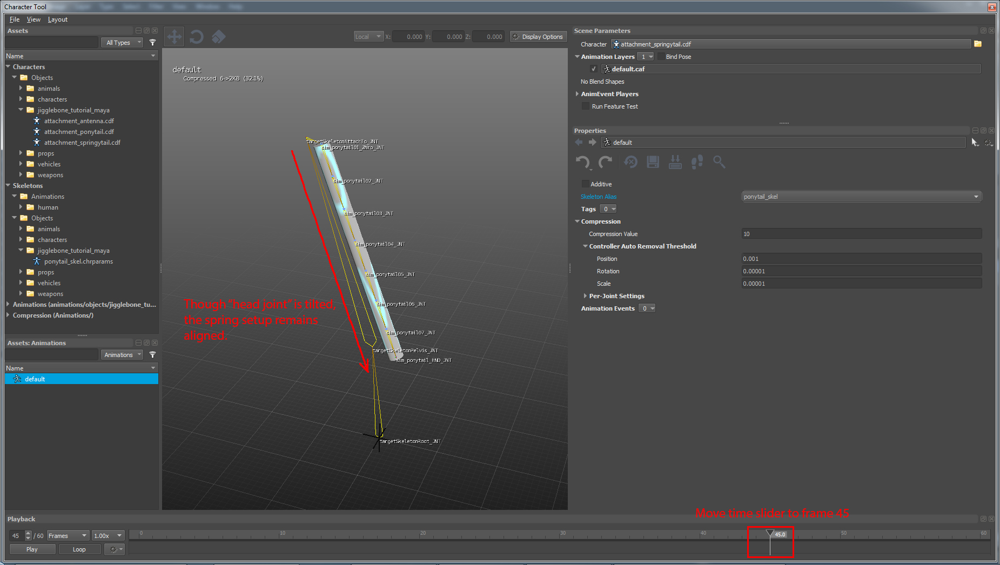
Pic20a & b: Comparing the difference in setups with Springs & Pendula, while in a rest pose
With the spring sample CDF, we added in front of the springs a pendulum simulation joint to offset rotate the joint chain. We could also replicate the pendulum-only setup, by tweaking the value for the pendulum pulled downwards by gravity.
Summary
What we achieved in this tutorial:
- Created a simplified, abstract character skeleton (as the primary skeleton)
- Created a simple 3ds Max bone / Maya joint chain (as the secondary skeleton)
- Created and smooth bind a poly cylinder to the joint chain (the secondary skeleton)
- Learned the requirements/rules for a secondary skeleton to be attachable to the primary character skeleton in CRYENGINE
- Made the Maya scene export-ready to CRYENGINE, in 3ds Max we don't have to change the scene hierarchy
- Made the CRYENGINE nodes and a basic material to be able to export to CRYENGINE
- Gathered the exported 3ds Max / Maya assets inside CRYENGINE's Character Tool
- Set up a new *.CDF file (a typical CRYENGINE character)
- Extended a character with a pony tail
- Set up physics simulation parameters for "Joint Attachment"
- Learned the different use cases of CRYENGINE's "Joint Attachments"